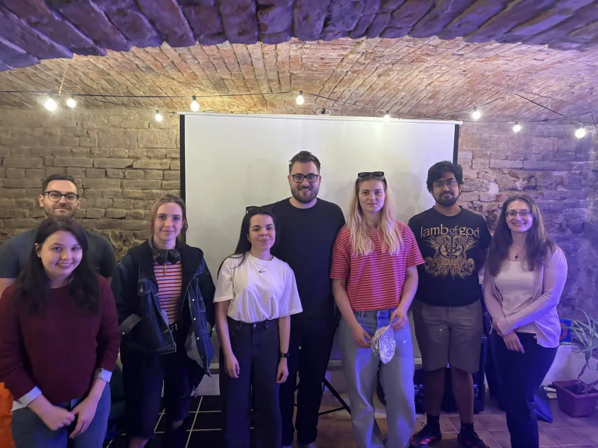

×
❮
❯
Science Pub Talks is organized by a group of enthusiastic researchers and students of theoretical and astro physics. Inspired by astronomy on tap, our goal is to bring science and the latest discoveries to the general public. We invite speakers from Brno and beyond who specialize in various fields of science.

Lýdia Štofanová, Barbora Miklošová, Barbora Hudačková, Lea Szakszonová, Vasudevan Sundararaman, Michal Zajaček (all from Masaryk University), Erik Búš (AV ČR) and Tomáš Ondro (Mendel University.)
Have a question or want to give a talk? Feel free to reach out!
axismundi.science@gmail.com